Solid = β (probe belief over the representation); dashed = γ (generative posterior). Colour = component. Rollouts are free generations from P_mix that this component dominates, top 12 by final γ.
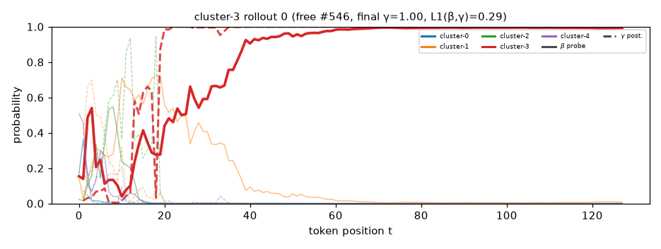
near a tall mountain , there was a small ogre who loved to paint . the ogre loved to tell jokes about each other . one day , the ogre asked , " what is your friend ' s favorite colors , but what is wrong ? " the ogre thought for a moment . " i want to be colorful too ! " he replied . the ogre smiled and said , " but sometimes , what you feel is too big to break . " the ogre smiled and explained how he wished to be a brush . the ogre , surprised by the words . " that was nice !
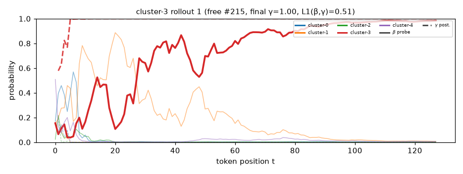
clouds floated above the land . in this world , a tiny ant lived in a castle made of soft cloud . this ant was different ; it had wings like a rainbow . one day , the ant saw a big door made of the strongest cloud . he was curious and wished to enter . to get in , he knew he should find a treasure , but he needed a plan . the ant said , " i can do this , but i need to be more than just a tiny ant . " the ant , however , was determined to go out and ask for help . he called out to the other ants , " can you help me ?
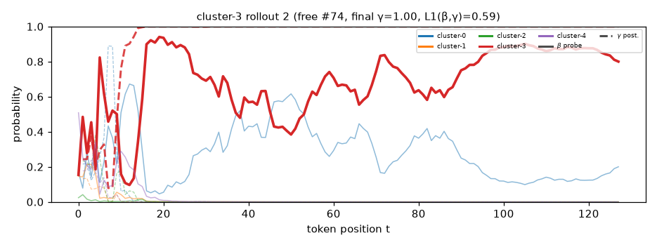
happily , a girl named alice had a secret that made her who was a giant ! she loved to tell jokes . every day after school , she would sit at lunch , and everyone else would listen . one day , her friend jose came over and said , " what if the giant looked scary ? " alice laughed , " if it ' s just a little ? " when she heard the laugh again , she didn ' t mind . " oh , dear jose , i can ' t ! " she yelled , looking at the giant . jose frowned , " what ? i need to tell you something fun ! " alice wanted to cheer him up
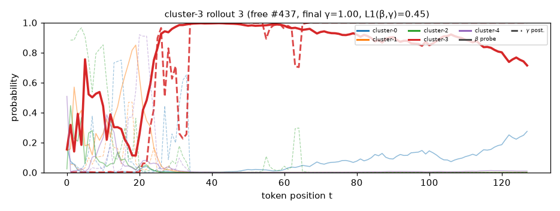
gently , a boy named peter looked up at the sky . it was big and full of stars . suddenly , a blue alien named samuel appeared . " i have a riddle for you ! what is always coming ? " peter thought hard . he noticed that the answer was " the first riddle . " he asked , " what has a neck but no head ? " samuel guessed , " a bottle . " the alien exclaimed , " is it it ? " peter laughed and said , " no ! it is a bottle . " the alien had a big bag . " what has a face and two hands but no arms ? " peter scratched
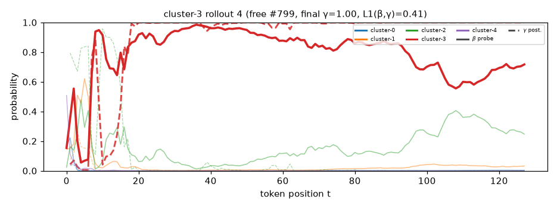
in a hidden valley , a giant named samuel sat on a rock . he was known as a grumpy giant , always making people laugh . one day , he decided to build a giant to scare his friends . " come and play ! " he roared . the giant , curious about the noise , came closer . samuel laughed and climbed back up . " why do you want to try ? " he asked , tilting his head . the giant chuckled . " to show you the truth in jokes , right ? " samuel frowned , confused . " well , i guess i just want to be funny . " the giant chuckled . " you can
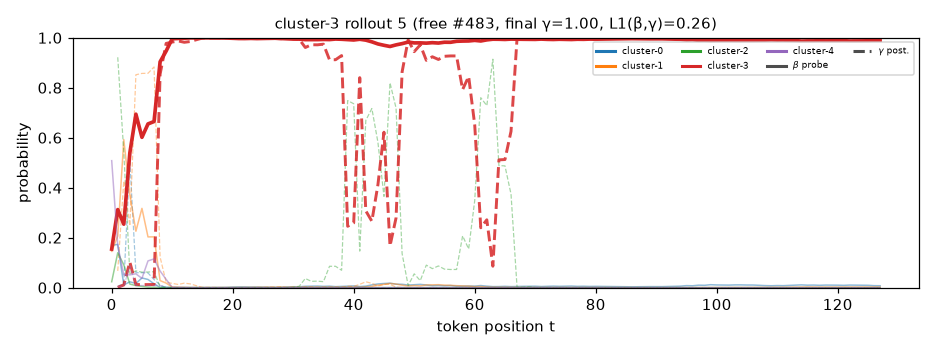
under a big oak tree , a clever fox named maria lived . she had a secret . she could create amazing things from plants , and her friends wanted her to help . one day , she discovered a colorful stone that could make them fly ! " this is my magic stone ! " she exclaimed . but there was a problem . a squirrel was hiding under a tree . " i can ' t jump without asking ! " he cried . maria thought for a moment and decided to give the stone back . " here ! you can make my magic fly ! " she said excitedly . the squirrel laughed . " you think you can do it ? "
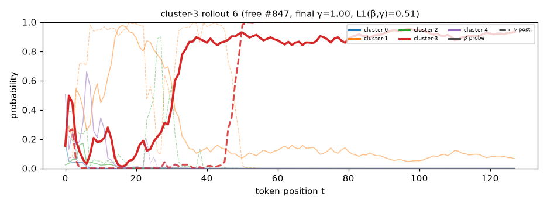
on a quiet evening , an owl sat on a branch , watching the stars twinkle . she noticed a tiny fairy caught in a web . the fairy waved and said , " join me , dear rabbit ! we have a plan ! " the owl flapped her wings and flew up high , leaving a trail of wings . as she flew up , she met a sad fox . the owl lost her song and felt sorry for the fox . " i may not fly , but i can help you , " she said softly . the fox , surprised by her courage , asked , " how can i help ? " the owl smiled , " you must
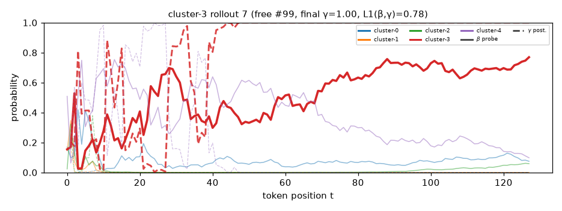
a big rock lay covered in snow . a curious kitten watched it with big eyes . " what if there is a secret ? " one kitten thought . " what if there are secrets ? " but the kitten was brave . " should i tell someone ? " as the kitten approached , a cat jumped down . the child frowned . " what do you mean ? " they asked . the cat scratched its head . " we are just sitting there , thinking . " the child frowned . " it ' s not just the rock that shines ! it ' s a riddle ! " the cat shook its head . " i speak without a mouth and hear
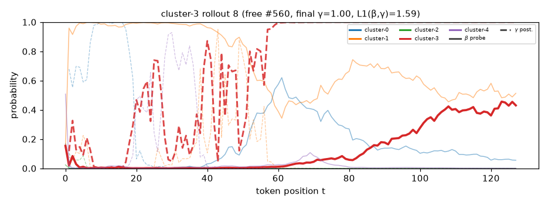
gentle and soft , the sun shone on the big tree . a girl named lena sat under the big tree , and her mother watched the birds sing . they loved to talk about the happy moments . lena wished to feel like they could touch the sky . she wondered if she could be like them . suddenly , a wise old fox appeared next to her . " what is always in front of you but can ' t be seen ? " he asked . lena thought for a moment and said , " i am big , but i am big , and i don ' t want to share my feelings . " the fox smiled and nodded . " you
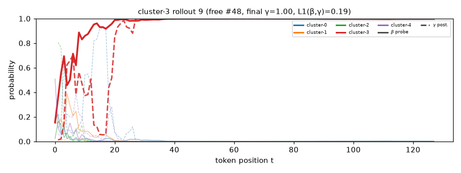
in a bright garden , a boy named leo had a funny idea . he wanted to be a giant spider ! leo had a stuffed bear on top . " you are a great spider ! " he said . but instead of a spider , he got a rubber duck ! " i can catch you ! " leo yelled . he decided to make a giant spider with a bearfhy x ! he thought it would look cool , and the cat would jump over the fence ! with only two hours left , leo made a big whirlpool . " oh no ! " he yelled . " this
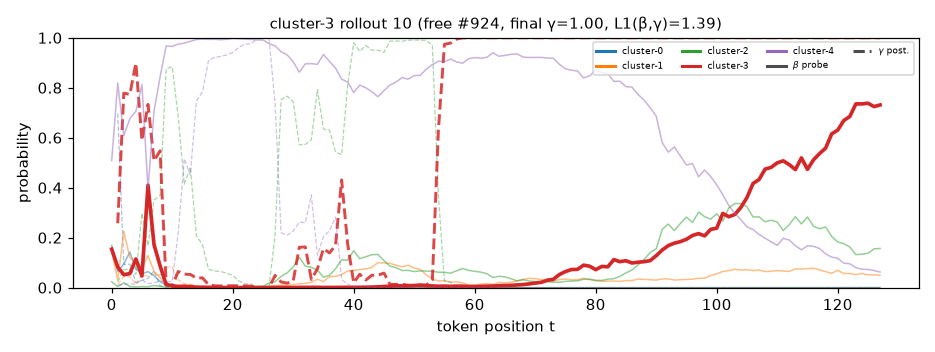
amazingly , a boy named leo found an old bottle on the beach . inside was a note that read , " the treasure is yours . " feeling curious , he opened the bottle and let the paper fly . suddenly , a gust of wind blew , and it lifted him off the ground ! he zoomed through a colorful land . in this world , everyone was laughing and dancing . but then , he noticed a girl named mia sitting alone . she looked sad , and leo felt a tug in his heart . " who could he belong ? " he thought . leo flew down to her and asked , " what is wrong ? " mia replied ,
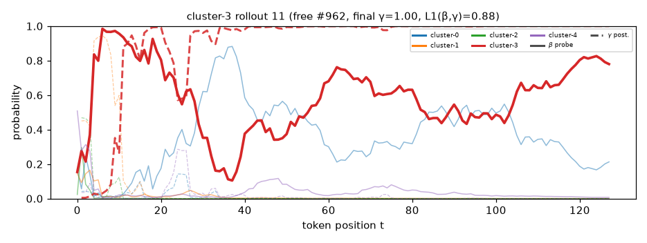
joyfully , a little girl named kim walked to the park . she loved the flowers and butterflies . the smell of flowers filled the air , and she missed her friends . suddenly , she spotted a big red ball in the grass . " what do you want ? " she asked , bending down to pick it up . the ball pointed toward the tall trees . " this is my game ! " she cried . with a big leap , kim picked it up . it didn ' t look like them . instead , it bounced like a feather ! kim jumped up and giggled . " i ' m the new friend ! " she shouted . she chased